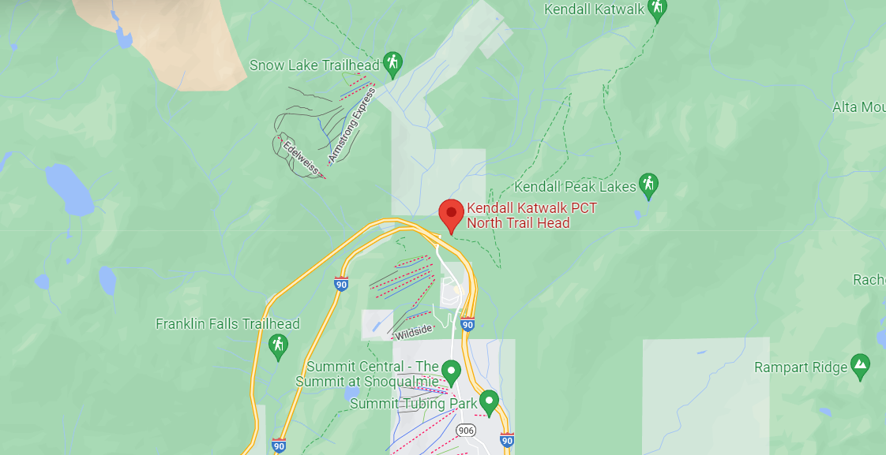

Pacific Crest Trail - Section J
Snoqualmie Pass to Stevens Pass
Hike Description (from WTA)
This route traverses the Alpine Lakes Wilderness, and the trail passes by a least a dozen lakes along the way, many of them swimmable in late-summer. But the lakes aren't the only attraction. Hikers here encounter meadows, old-growth trees, and stunning views of towering mountains.
This trail is not for the beginning backpacker. There is considerable elevation gain and loss - about 16,000 feet! Some places are impassable until well into August when the snow melts out. And the distance requires hikers to carry six or seven days of food and arrange for a car shuttle or pick-up at Stevens Pass.
Beginning from the Snoqualmie Pass trailhead, hikers plunge into the stunning high country, starting off Day 1 out of this trailhead with a trek across the Kendall Katwalk. As you head further north, you may find some relative solitude, but this section is popular and accessible from both ends, so plan your outing accordingly; it may be hard to find a suitable place to camp, but please abide by Leave No Trace principles, and personify good trail etiquette.
Check out our training page to prepare for this trail!
Hike Map
Q&A
Posts
@sketchb02
June 26, 2022
Here's my hike description!